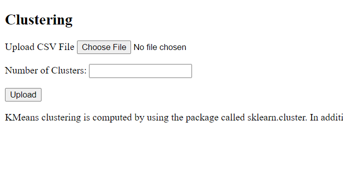

Data Mining Projects
1. Chi-Square testing using python program and receiving values from database. Click on picture to see the results
2. Five number summary of a box plot, normalized table & result of most smilar states based on Cosine similarity test. Click on picture to see the results
3. Tensorflow Image Classification using python. Click on picture to test the program
4. Developed a program using python to cluster the data points based on the input number, and identify the outliers (k-means clustering). 